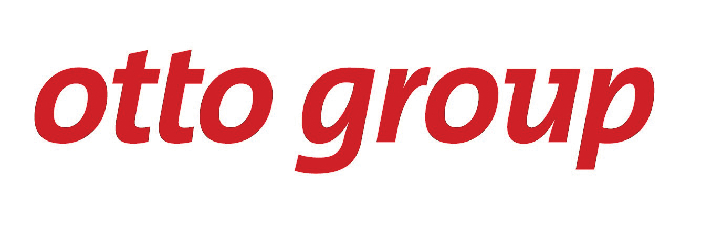
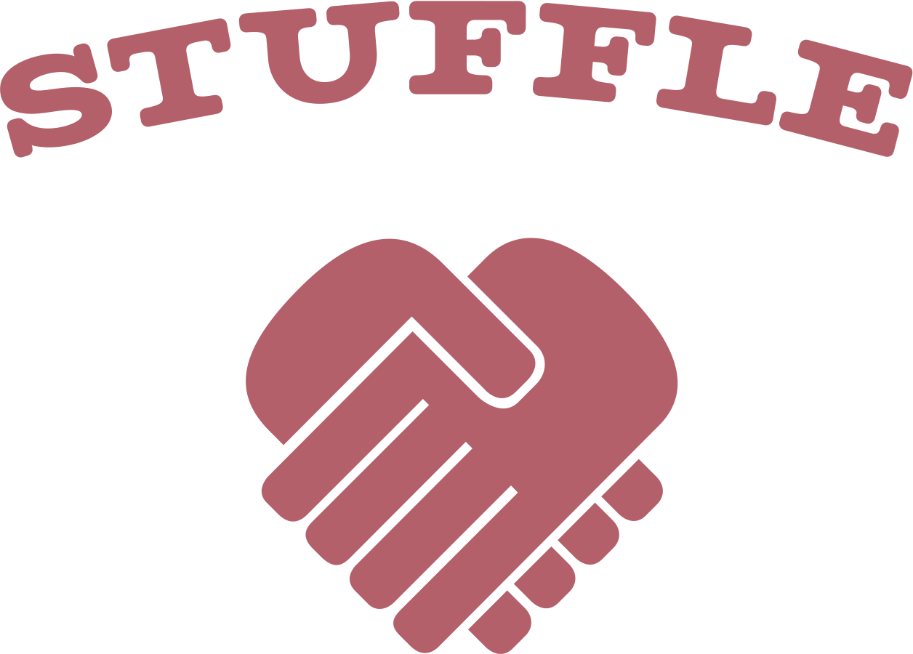
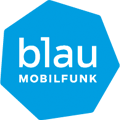

Our summer workshop is over, but there is more to come.
A big thank you to the participants and coaches, you've been awesome!
Follow us on Twitter or Facebook for updates about upcoming events.
Even if you've missed the workshop, you can still join our monthly meetup. And who knows, maybe we're going to have another beginner's workshop soon so that you can dive into the magical world of ruby on rails, too.
You learn designing, prototyping and coding with the help from our coaches.
You need your own laptop, curiosity and a sprinkle of imagination!
Want to help? We are looking for volunteers and Rails coaches. Email us.
Are you curious about Rails? Do you want to learn more about programming? Do you want to share your ideas?
Then you shouldn't miss our meetup on every fourth Wednesday, 19:30.
Location: Kopiba Hamburg, Beim Grünen Jäger 24, 20359 Hamburg
u. weiter gehts ;) toller Tag. Verwirrend. Erkenntnisreich. Informativ. Interessant. Tolle u Interessante Menschen. DANKE! :) #railsgirlshh
— Frau M. (@Krmlmnstr) August 17, 2013
Völlig fertig und ein fettes Grinsen Gesicht! Danke @railsgirlshh @ladysahne und bester Coach ever Sven für den Tag! #railsgirlshh
— Ines Schaffranek (@InesSchaffranek) August 17, 2013
It has been a great day of teaching ruby & rails. Next up: BBQ on the roof top :-) #railsgirlshh
— Christopher Bertels (@bakkdoor) August 17, 2013
Ich mag jetzt sofort Programmiererin werden. #railsgirlshh
— Lucie (@Autofocus) August 17, 2013
Mission #railsgirlshh coaching accomplished, the female devs were eager to dive in the world of #rubyonrails. Thanks for the awesome event.
— Wojciech Pietrzak (@astropanic) August 17, 2013
Thanks #railsgirlshh for the great introduction & encouragement, I am eager to continue learning #rubyonrails! :-) pic.twitter.com/a4ziFga3ld
— Leticia (@leticiagasi) August 18, 2013
How much does the workshop cost? Nothing, it's free! You just need to be excited!
Who is this aimed for? Women of any age with basic knowledge of working with a computer. We’ve had people of all ages taking part. Most of the speeches are given in german, but small group work is done in german or english according to your needs. Please bring your laptop.
Can men attend? Yes, but you need to be accompanied by an interested lady. Also, girls are given a priority.
I know how to program - How can I help? We’re also looking for people to be coaches. We’ll have a two-three hour workshop before the event to walk you through the curriculum. Email us.
Is this going to be in english? Nope, most of the event and talks are going to be in german! However, some instructions might only be available in english. If you don't speak german, you're welcome to join us nonetheless, as there will be english speaking coaches around.
Rails Girls Hamburg in 2013 is co-organized with our awesome partners.
Want to help? We're looking for partners & sponsors for the non-profit event! Email us!
 The Otto Group’s activities are structured into three business segments - Multichannel Retail, Financial Services, and Services. The Group’s core business is retail via the channels of e-commerce, catalogues and stores. Landing a job with the Otto Group means getting more than 53,000 highly motivated colleagues in one fell swoop, who work in the world's leading retail and service corporation with its 123 group companies in 20 countries. This includes all the advantages and benefits that such a big company has on offer, such as many advanced training and career opportunities and, of course, the unqualified appreciation of every single employee.
We provide web software development, agile and lean development process support and help our clients with market and customer discovery. Also we're always on the lookout for agile and technology agnostic developers in our Hamburg and London offices.
 Stuffle builds a mobile flea market that helps you to get rid of old things and to find great stuff nearby. We are Ruby on Rails enthusiasts because it's a beautiful framework that lets you achieve a lot with a little code. Supporting Rails Girls is important to us because it's a great way to engage more people in programming, and to share our enthusiasm for Ruby on Rails.
 blau Mobilfunk ist einer der größten Mobilfunkdiscounter am Markt. Wir entwickeln agil mit Scrum und Pair-Programming und lieben Clean Code. Wir haben eine ausgewachsene CI-Infrastruktur und arbeiten Test-Driven. Wir sind Teil der Community, hosten Usergroups und sind auf Github zu finden.
Hanse Ventures is the start-up incubator in Hamburg. We develop our own internet and mobile business concepts and implement these together with suitable founder teams. Hanse Ventures provides the necessary infrastructure that a young company requires for its first steps to success. With us, entrepreneurs can focus on the growth of their start-ups. We support our start-up teams in all areas with our expertise, financing assistance, our powerful network or office space. Start-ups benefit from our experience and from the support of the professional Hanse Ventures team. Right from the start, experts are available to assist entrepreneurs and their teams. These include specialists in finance, business development, online marketing, product development, programming, design and public relations. Our programming team uses agile techniques such as Rails and we are always looking for talented people to join our team.
XING is a social network with over 11 million members. We are the leading network for business professionals in Europe. Based in Hamburg, Germany. XING is really into teamwork and using agile techniques. Independent, international teams build our platform's products. We have been coding Rails since 2006. XING of course contributes to open source and hosts meetups, user groups, after-work events and workshops. We are looking for talented people to build the social network of the future in Rails, iOS, Android and Perl.
AKRA stands for professional and individual IT solutions, founded in 1999 in Hamburg. We have built up a great deal of experience by using Ruby on Rails since 2006. Ruby on Rails allows us to develop efficient web applications with comparatively little effort but with great functionality and elegance. We work according to the agile software development method focussing on Scrum, eXtreme programming, Kanban or feature driven development. We are constantly looking out for bright and committed developers.
 Seit 2010 bieten wir mit fortytools innovative Web-Lösungen aus Hamburg. Dabei nutzen wir agile Vorgehensweisen und neueste Technologien, um unsere eigenen Produkte sowie maßgeschneiderte Kundenprojekte erfolgreich umzusetzen.
Seit 2010 bieten wir mit fortytools innovative Web-Lösungen aus Hamburg. Dabei nutzen wir agile Vorgehensweisen und neueste Technologien, um unsere eigenen Produkte sowie maßgeschneiderte Kundenprojekte erfolgreich umzusetzen.
Wir sind keine typische IT Beratungsfirma. Talentierte, dynamische und integre Menschen sind hier zusammen gekommen, um ausgezeichnete Leistungen für unsere Kunden zu erreichen. Egal, ob unsere Kunden in der Medienbranche, im Bankensektor oder im öffentlichen Dienst tätig sind. Wir wollen die Arbeit von morgen revolutionieren, indem wir die Gesellschaft durch Software besser gestalten. Produkte / Firmentätigkeit *IT Consulting - Organizational optimization, testing strategy, customer experience design, continuous delivery *Enterprise-scale systems delivery *Agile tools and practices. Wir betreuen Kunden mit Büros in Australien, Brasilien, Kanada, China, Deutschland, Indien, Singapur, Südafrika, Uganda, Großbritannien und den USA.
Black Delight Kaffeerösterei is a Coffee roastery from Hamburg. We value quality over quantity. Our goal is to find exquisite coffee rarities for our customers and to roast these with the highest quality.